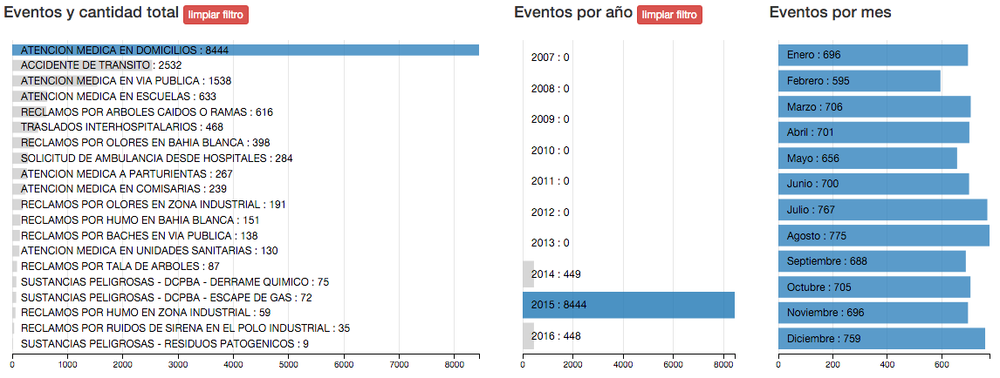

El objetivo principal de este trabajo práctico consistió en utilizar los datos públicos de los llamados al 911 de la ciudad de Bahía Blanca para contestar a distintos tipos de preguntas, mediante la utilización de múltiples visualizaciones interactivas.
Considerando que los datos contienen información del evento o la ayuda requerida, el lugar reportado y la fecha en que se hizo la llamada al 911, primeramente se plantearon varias consultas para ser respondidas mediante la exploración de la información:
Partiendo de la formulación de las inquietudes anteriores, se pudo determinar de manera más clara qué tipo de visualizaciones ayudarían a resolver las mismas.
Para obtener la información se utilizó uno de los múltiples servicios que provee el gobierno de la ciudad de Bahía Blanca de datos abiertos, también conocido como Gobierno Abierto.
El servicio más precisamente se detalla a continuación:
Los datos disponibles comienzan a partir del día 28 de Mayo de 2007 y pueden obtenerse hasta la actualidad. Para el desarrollo de este proyecto, se obtuvieron todos los eventos desde el primer día disponible hasta el 25 de Febrero de 2016.
Oficialmente el servicio antes descripto retorna los resultados en formato XML, por ejemplo:
<items>
<item>
<fecha>01/01/2016 00:03:57</fecha>
<evento>ATENCION MEDICA EN DOMICILIOS</evento>
<domicilio>DR NARCISO MALLEA 6000</domicilio>
<localidad>BAHIA BLANCA</localidad>
<lat>-38,69007</lat>
<lng>-62,27739</lng>
</item>
…
</items>
Dado que este formato no era cómodo para trabajar con librerías de visualización basadas en Javascript, se optó por transformar los datos a TSV (tab-separated values) debido a que el archivo de datos final sería más liviano que un JSON, lo que haría más rápida la carga de datos en el lado del cliente al momento de cargar las visualizaciones.
Para reducir el tiempo de procesamiento de los datos al momento de renderizar las visualizaciones, se optó por reemplazar el formato original de la fecha por el formato más estándar AÑO/MES/DIA. De esta forma, en Javascript no hizo falta hacer un parseo intermedio de las fechas y así se logró una optimización del procesamiento de los datos.
Durante el desarrollo del proyecto se detectó que los domicilios no tienen valores consistentes con las calles reales de la ciudad de Bahía Blanca, por ejemplo:
Luego de hacer un análisis de los datos de geolocalización se detectó que todos los domicilios tenían un número cero extra al final, es decir que el domicilio real era “BERUTI 900” en lugar de “BERUTI 9000”.
De esta manera, se procedió a actualizar todos los domicilios que tuvieran un cero al final para así eliminarlo y corregir los mismos.
Con el objetivo de reducir el tamaño del dataset final luego de limpiar los valores, se optó por hacer algunas modificaciones a algunos de los campos de los distintos registros.
Primeramente, dado que los valores del campo evento era una lista fija de valores (por ejemplo “ATENCIÓN MÉDICA EN DOMICILIOS” y “RECLAMOS POR OLORES EN BAHÍA BLANCA”), se decidió reemplazar dichos valores por identificadores numéricos que luego serían utilizados para mostrar correctamente la descripción de cada tipo de evento.
Luego, se optó por reducir la precisión de la latitud y longitud a seis decimales, dado que era una cantidad significativa para poder visualizar correctamente los datos geolocalizados en un mapa.
Finalmente, el campo de ciudad contenía múltiples valores inconsistentes y considerando que todos los llamados corresponden a la ciudad de Bahía Blanca y alrededores, el mismo no resultó relevante para el desarrollo del proyecto por lo que se decidió eliminar este dato para reducir aún más el peso de los datos.
Para realizar la transformación de XML a TSV, modificación y limpieza del dataset se decidió utilizar la herramienta OpenRefine dada su facilidad de poder ejecutar cada uno de los pasos y poder corregir errores utilizando sus opciones de deshacer y rehacer.
Para el desarrollo del proyecto se comenzó haciendo algunas pruebas de concepto utilizando la herramienta Tableau. A pesar de su facilidad para crear visualizaciones, se encontraron algunas limitaciones a la hora de organizar los filtros disponibles para lograr un tablero (dashboard) que sea cómodo de utilizar. Además, el proyecto corriendo desde el servicio Tableau Public funcionaba algo lento para lo que se pretendía originalmente.
Por esta razón, se optó por hacer un desarrollo utilizando tecnologías web como Javascript, librerías de visualización basadas en el mismo lenguaje, y Bootstrap para el maquetado HTML dado el potencial y flexibilidad que proveen para desarrollar proyectos de este tipo.
Luego de hacer una investigación de las distintas herramientas disponibles como D3.js o librerías basadas en ella, u otras librerías independientes como p5.js, se decidió utilizar la librería dc.js : Dimensional Charting Javascript Library basada en las librerías D3.js y crossfilter.
Las posibilidades que brinda la librería dc.js hicieron que no quedaran dudas que esta librería era ideal para el desarrollo del proyecto, ya que cumplía con las siguientes características:
Luego de analizar los planteos a resolver y la librería a utilizar, se procedió a elegir las visualizaciones a implementar acorde a las posibilidades que ésta última brinda.
Para los eventos, se decidió armar una visualización de barras horizontales con los distintos tipos de eventos y la cantidad total de cada uno de ellos para el rango de fechas filtrado. El orden de las barras está dado por la cantidad de eventos de manera decreciente.
Un ejemplo de la visualización:
Más allá de la cantidad de cada tipo de evento, es importante saber la cantidad de ellos a lo largo del año, por eso se decidió hacer una visualización exclusiva para ésto:
Como se puede observar, se armó una visualización similar de barras horizontales para lograr una mejor lectura de las etiquetas. A diferencia de la visualización de eventos, el orden de las barras se dejó acorde al año y no a la cantidad.
De manera análoga a la visualización por año, se decidió agregar una visualización que permitiese ver y analizar rápidamente la cantidad total de eventos en cada uno de los distintos meses. A continuación se puede ver un ejemplo de la misma.
Esta visualización fue una de las más importantes dado el impacto que tiene a la hora de analizar los datos. Gracias a esta visualización, se pueden encontrar patrones o anomalías muy rápidamente.
El objetivo de la visualización fue representar la cantidad total de eventos por día a lo largo del tiempo. Dado que el rango de tiempo pueden ser años, la visualización permite hacer zoom para llegar a la unidad mínima del día.
Además, para ayudar a la navegación se agregó una visualización a menor escala para facilitar la navegación y filtrado del rango de fechas de la línea de tiempo.
A continuación se puede ver un ejemplo de la visualización:
En la captura anterior se puede apreciar que la unidad de tiempo es el año, pero haciendo zoom se puede ver más en detalle la misma y cómo funciona el filtrado en la visualización auxiliar del filtro de rango de fechas:
Finalmente, para el caso en que el usuario haya seleccionado un solo tipo de evento, el color de la visualización de la línea de tiempo se adaptará al color del evento. En caso que hayan múltiples tipos de eventos, la línea de tiempo será representada en color negro.
Como se mencionó anteriormente, dado que los datos contenían información de latitud y longitud, se decidió crear un mapa también relacionado con las visualizaciones anteriores para poder visualizar los registros geolocalizados. Dada la cantidad de registros, se decidió armar el mapa haciendo agrupamiento (clustering) de los íconos para hacer una mejor lectura del mapa.
Un ejemplo del mismo:
Por otro lado, para el caso en el que el usuario esté visualizando los datos de todos los años al mismo tiempo, se agregó un botón para refrescar el mapa manualmente para disminuir la carga de procesamiento y hacer que las visualizaciones funcionen más fluidas.
Uno de los principales objetivos de este proyecto era el desarrollo de visualizaciones que funcionaran de manera conjunta para que el usuario pueda hacer un análisis interactivo más sofisticado de la información.
De esta manera, y utilizando la librería dc.js, fue que se logró que todas las visualizaciones estén correlacionadas, es decir que los filtros aplicados a una visualización son aplicados a las restantes. Esto tiene un gran potencial para análisis porque no es necesario hacer múltiples visualizaciones para distintos escenarios.
A continuación se mencionan algunos ejemplos de análisis y cómo lograr los mismos utilizando las visualizaciones implementadas.
Las visualizaciones resultantes pueden verse a continuación:
Resultado:
Gracias a las visualizaciones implementadas y su ágil manipulación para hacer exploración de los datos, se hizo un análisis de las inquietudes planteadas al comienzo de este informe.
Haciendo un análisis simple de la línea de tiempo se pueden detectar inmediatamente distintos momentos donde la cantidad de eventos fue llamativamente superior al promedio.
En la siguiente captura se puede observar lo antes indicado y algunos de los puntos donde se reportó una cantidad significativa de eventos:
De estas observaciones podemos detectar que el día que más reportes hubo fue el 15 de Abril de 2013. Si filtramos nuestros datos a ese único día de Abril del 2013 podemos ver lo siguiente:
De manera automática podemos ver que casi el 80% de los reclamos del día fueron específicamente por reclamos por olores en Bahía Blanca.
Luego, podríamos querer ver la ubicación a donde se hicieron dichos reclamos, para esto podemos observar el mapa de eventos que se filtran a partir de los otros filtros seleccionados:
Algo tal vez llamativo es que todos los reclamos fueron realizados sobre la zona Oeste de la ciudad, lo que podría dar indicios de algún evento ocurrido en dicha zona.
Para este análisis se acotó el tipo de evento a accidentes de tránsito, y se consideraron las festividades de Navidad y Año Nuevo del año 2015, y los cambios de quincena de Enero de 2016.
Filtrando los datos para hacer análisis deseado, obtenemos lo siguiente:
Al contrario de lo que la intuición podría indicar, podemos observar que la cantidad de accidentes reportados no fue alta en Navidad ni Año Nuevo. Inclusive, en el caso de Año Nuevo bajaron a pesar de que uno podría suponer que la cantidad de accidentes debería aumentar en la madrugada del primero de Enero.
Por otro lado, si consideramos la segunda quincena de Enero, podemos ver como el 17 de Enero (domingo) aumentó notablemente la cantidad de accidentes lo que podría estar asociado al recambio de gente entre la primera y la segunda quincena de 2016.
A pesar de los resultados encontrados, es importante recordar que los datos hacen referencia a los llamados al 911, por lo que la cantidad de accidentes podría ser mayor.
Esta inquietud se puede responder rápidamente mirando de manera directa las visualizaciones de la cantidad total de eventos por año y por mes como se ve a continuación:
Luego, podemos concluir que el año 2010 fue hasta ahora el año con mayor cantidad de eventos reportados al 911, y el mes con más reportes fue Diciembre.
Hay que considerar que la cantidad de eventos por mes es la suma de eventos en ese mes para todos los años. Luego, si quisiéramos saber la cantidad total de eventos para Diciembre pero solo para 2010, la visualización sería la siguiente luego de aplicar el filtro en los años:
Nuevamente se puede concluir que Diciembre es el mes con la mayor cantidad de eventos reportados pero en este caso es solo considerando el año 2010.
Este planteo es algo amplio de contestar, pero podríamos hacer un análisis para distintos tipos de eventos.
Si consideramos un caso obvio, podríamos filtrar los eventos por “ATENCIÓN MÉDICA EN COMISARÍAS” que es un tipo de evento donde la ubicación reportada haya sido la misma o similar para distintos llamados. Luego de filtrar los resultados por el evento antes mencionado y hacer un zoom en el mapa podemos ver lo siguiente:
Luego, si hacemos click sobre el agrupamiento de 39 elementos:
De esta forma se puede ver que existen reportes del mismo tipo de evento desde un mismo lugar.
Por otro lado, consideremos otro tipo de evento como “RECLAMOS POR TALA DE ÁRBOLES”, luego de filtrar los datos y hacer zoom en el mapa, podemos ver algo como:
A diferencia del caso anterior, no existen tantos casos donde se repita el reporte del mismo evento desde un mismo lugar. Si hacemos zoom en el agrupamiento de 7 elementos:
A pesar de que el agrupamiento era de 7 elementos podemos ver que finalmente el agrupamiento era solo de 5 elementos ya que otros 2 eran de lugares cercanos con distinta información de geolocalización.
Luego, algo llamativo es que si analizamos cada uno de los elementos podemos ver que corresponden a los siguientes registros con sus respectivos domicilios y día y hora:
Luego podemos observar que al parecer se hizo un reclamo del mismo tipo por reiterados años y para un mismo lugar. Esto podría ayudar a detectar algún tipo de problema con los árboles de la zona o vecinos talando árboles de manera ilegal ya que la Municipalidad es la entidad oficial de cumplir con este tipo de tareas.
A lo largo del informe se explicó todo el proceso llevado a cabo desde el planteamiento de inquietudes a contestar, qué tipo de procesamiento de los datos debió hacerse, qué visualizaciones eran útiles para poder hacer el análisis, las herramientas seleccionadas para hacer el desarrollo y finalmente el análisis de la información utilizando las visualizaciones interactivas como medio para poder interpretar y extraer conocimiento de los datos en crudo.
Además, se pudo demostrar que las visualizaciones fueron de gran ayuda para contestar muy rápidamente a todos los planteos que se hicieron al comienzo del proyecto, lo que refuerza la gran utilidad de hacer buenas visualizaciones para el análisis de información, permitiendo que cualquier persona pueda sacar conclusiones utilizando las mismas.